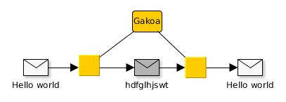

Zifraketa
Mikel Egaña Aranguren
Aurkibidea
- Sarrera
- Esteganografia
- Enkriptazio metodoak
- Indarrezko erasoak
- Laburpen algoritmoak
- Pasahitzak sistema eragiletan
- Enkriptazio asimetrikoa
Sarrera
Kriptografia: informazioa zifratu
Segurtasun mekanismo oso zaharra (Aintzinekoa)
Bermatzen ditu:
- Konfidentzialtasuna (Zifraketa)
- Osotasuna (Laburpen algoritmoak)
- Kautotzea (Ziurtagarri digitala)
Sarrera
Esteganografia: informazioa ezkutatu
Kriptografia: informazioa zifratu
Sarrera
Kriptografiaren historia:
- 1948 arte, Kriptografia aurre-zientifikoa
- 1948-an, Claude Shannon-ek Informazioaren Teoriaren eta Kriptografia modernoaren oinarrik ezartzen ditu
- 1976-an Diffie & Hellman-ek gako publikoko Kriptografia kontzeptua plazaratzen dute
Sarrera
Kriptoanalisia: mezu zifratuak deszifratzeko teknikak
Kriptologia: Kriptografia + Kriptoanalisia
Sarrera
Kriptosistema: DK ( EK ( M ) ) = M
- M: zifratu gabeko mezuak
- C: zifratutako mezuak (kriptogramak)
- K: gako posibleak
- E: enkriptazio algoritmoa
- D: desenkriptazio algoritmoa
Sarrera
Kriptosistemak
- Simetrikoak edo gako pribatukoak
- Gako bakarra enkriptatu eta desenkriptatzeko
- Zifratua blokeetan edo fluxu moduan
- Asimetrikoak edo gako publikokoak
- Gako batek enkriptatu eta beste batek desenkriptatu
- Gako bikoteak: batek enkriptatzen duena, besteak enkriptatzen du
Gako pribatuko kriptosistemak

Gako pribatuko kriptosistemak
Gako ahulak
- Algoritmo bakoitzaren ezaugarrien arabera agertu daitezke
- Jokaera desegokia duten gakoak
- EK(M)=M
- EK(EK(M))=M
- DK2(EK1(M))=M
Esteganografia
Informazioa ostentzean datza, ikusgarria izateko gakoa dakienarentzat soilik
Gakoa jakin barik, badirudi ez dagoela informazioa ezkutaturik
Kriptografiaren aitzindaria
Esteganografia
Histaiaeo (Mileto-ko gobernatzailea) Dario I errege persiarraren kontra altxatzeko aliatuen bila zebilen
Inork detektatuko ez zituen mezuak bidali behar zituen:
- Mezulariei ilea ebaki
- Buruko azalan mezua idatzi
- Ilea berriro hazi arte itxaron, eta orduan helburura bidali
- Helburuan ilea ebaki eta mezua irakurri
Esteganografia
Txantiloi batekin
Gakoa forma da

Esteganografia

Esteganografia
Karaktere batzuk hautatuz

Gakoa: hitz ez-monosilabiko bakoitzaren lehenengo hizkia

Esteganografia
Informazioa ezkutatzea multimedia artxibotan (normalean irudiak)
BMP formatuan pixel bakoitza RGB-n 3 byte dira
LSB (Less Significant Bit): byte bakoitzaren azken bit-a aldatzeak ez dauka efekturik
Esteganografia
Adibidez, textua ezkutatzeko nahi dugun hizkiaren ASCII kodea txertatzen dugu

Enkriptazio metodoak
Helburuak
- Mezua ulertezin bihurtu
- Zifratutako informazioa berreskuratu
- Inplementazioa ahalik eta sinpleena
Enkriptazio metodoak
Oinarrizko teknikak kriptografia klasikoan
- Transposizioa (jatorrizko hizkiak lekuz aldatzen dira soilik)
- Ordezkapena (jatorrizko hizkiak beste hizkiekin aldatzen dira)
Esparta-ko Escitaloren metodoa
Paper tira bat makila batean kiribildu eta mezua idatzi
Papera askatu eta mezua bidali
Esparta-ko Escitaloren metodoa


Esparta-ko Escitaloren metodoa
Mezua deszifratzeko makila berdin-berdina beharrezkoa da
Paper tira makilaren inguruan kiribildu eta mezua irakurri
Sistema honen gakoa makilaren diametroa da
Escitaloren metodoa 2.0
Mezua zutabetan banatu
Gakoa: zutabe kopurua eta ordena
Escitaloren metodoa 2.0

Escitaloren metodoa 2.0
Kriptoanalisia
- Konbinatorian oinarritzen da
- Blokeen tamaina kalkulatu
- Blokeak orden ezberdinean konbinatu zentzua duen mezua aurkitu arte
Atbash metodoa (Ispilua)
Zifraketa monoalfabetikoa
Hebrear alfabetotik datorren teknika
Hizki bakoitza bere "aurkakoarekin" aldatu
Atbash metodoa (Ispilua)

Cesar Metodoa
Zifraketa monoalfabetikoa
Julius Caesar-ek erabilia
Hikzki bakoitzak alfabetoan duen posizioari 3 gehitzean datza
Cesar Metodoa

Afin metodoa
Zifraketa monoalfabetikoa
Cesar Metodoaren orokortzea
E(a;b)(M) = (aM + b) mod N
N alfabetoaren hizki zenbakia da
Cesar: afin E(1,3)
Hiztegi metodoa
Zifraketa monoalfabetikoa
Korrespondentzien taula "eskuz" sortu

Polybius metodoa
Zifraketa monoalfabetikoa
Zenbakiak edo hizkiak

Ordezkapen metodo monoalfabetikoak
Estatistikan oinarritutako metodoa
Al-Kindi-k 9 mendean sortua
Jatorrizko hizkia beti ordezkatzen da hizki berdinagatik
Hizkuntza bakoitzean badakigu hizki bakoitza zenbat agertzen den
Badakizkigu zeintzuk diren gehien agertzen diren 2/3/4 hizkiko hitzak hizkuntza bakoitzean
Ordezkapen metodo monoalfabetikoak
Probak egin, ondorioztatu
Zifratutako textua zenbat eta luzeago, hobeto
Jatorrizko mezuaren textuaren hizkuntza jakin behar dugu
Ordezkapen metodo monoalfabetikoak
Kriptoanalisia zailtzeko metodoak
- Hutsuneak kendu
- Jatorrizko textua aldatu, esanahia mantenduz (Adib. SMS, WhatsApp, ...)
- Esanahia duten piktogramak erabili (kodeen liburua)
- 1-1 korrespondentzia ekidin, hizki berdina behin baino gehiagotan erabiliz (Sistema Polialfabetikoak)
Alberti-ren diskoa
Lehenengo sistema polialfabetikoa
Bi disko zentrokide, barrukoa mugikorra
Zifraketan barrukoa mugitzen doa, X alfabeto (Korrespondentzia) ezberdin erabiltzen dugularik
Gakoa jatorrizko posizioa da, zenbat hizki pasa ondoren biratzen den diskoa, zenbat biratzen den diskoa, eta zein zentzutan
Enigma makina
Historia osoko elementu kriptografiko ezagunena
Jatorrian gizartean erabiltzeko
Erabilera militarrerako eraldatua, batez ere Naziek
Enigma makina
Marian Rejewski matematikari poloniarrak Enigma desenkriptatzeko oinarriak ezarri zituen:
- "Bonba" deituriko makina elektromekanikoak
- Nazi-ek 2 gurpil gehitu zioten Enigmari eta "Bonbak" ez ziren gai
Enigma makina
Alan Turing-en taldea informazio horretatik abiatuz "bonba" berriak sortu zituen